NCERT Solutions for Class 11 Chemistry Chapter 2 Structure of Atom are part of Class 11 Chemistry NCERT Solutions . Here we have given NCERT Solutions for Class 11 Chemistry Chapter 2 Structure of Atom.
NCERT Solutions for Class 11 Chemistry Chapter 2 Structure of Atom
Topics and Subtopics in NCERT Solutions for Class 11 Chemistry Chapter 2 Structure of Atom:
| Section Name | Topic Name |
| 2 | Structure of Atom |
| 2.1 | Discovery of Sub-atomic Particles |
| 2.2 | Atomic Models |
| 2.3 | Developments Leading to the Bohr’s Model of Atom |
| 2.4 | Bohr’s Model for Hydrogen Atom |
| 2.5 | Towards Quantum Mechanical Model of the Atom |
| 2.6 | Quantum Mechanical Model of Atom |
NCERT Solutions Class 11 ChemistryChemistry Lab ManualChemistry Sample Papers
Question 1.
(i) Calculate the number of electrons which will together weigh one gram.
(ii) Calculate the mass and charge of one mole of electrons.
Answer:
(i) Mass of an electron = 9.1 × 10-28 g
9.1 × 10-28 g is the mass of = 1 electron
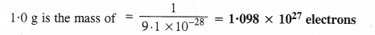
(ii) One mole of electrons = 6.022 × 1023 electrons
Mass of 1 electron = 9.1 × 10-31 kg
Mass of 6.022 × 1023 electrons = (9.1 × 10.31kg) × (6.022 × 1023) = 5.48 × 10-7 kg
Charge on one electron = 1.602 × 10-19 coulomb
Charge on one mole electrons = 1.602 × 10-19 × 6.022 × 1023 = 9.65 × 104 coulombs
Question 2.
(i) Calculate the total number of electrons present in one mole of methane.
(ii) Find (a) the total number and (b) the total mass of neutrons in 7 mg of 14C. (Assume that mass of a neutron = 1.675 × 10-27kg).
(iii) Find (a) the total number and (b) the total mass of protons in 34 mg of NH3 at STP.
Will the answer change if the temperature and pressure are changed ?
Answer:
(i) One mole of methane (CH4) has molecules = 6.022 × 1023
No. of electrons present in one molecule of CH4 = 6 + 4 = 10
No. of electrons present in 6.022 × 1023 molecules of CH4 = 6.022 × 1023 × 10
= 6.022 × 1024 electrons
(ii) Step I. Calculation of total number of carbon atoms
Gram atomic mass of carbon (C-14) = 14 g = 14 × 103 mg
14 × 103 mg of carbon (C-14) have atoms = 6.022 × 1023
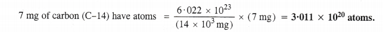
Step II. Calculation of total number and tatal mass of neutrons
No. of neutrons present in one atom (C-14) of carbon = 14 – 6 = 8
No. of neutrons present in 3-011 × 1020 atoms (C-14) of carbon = 3.011 × 1020 × 8
= 2.408 × 1021 neutrons
Mass of one neutron = 1.675 × 10-27 kg
Mass of 2.408 × 1021 neutrons = (1.675X10-27 kg) × 2.408 × 1021
= 4.033 × 10-6 kg.
(iii) Step I. Calculation of total number ofNH3 molecules
Gram molecular mass of ammonia (NH3) = 17 g = 17 × 103 mg
17 × 103 mg of NH3 have molecules = 6.022 × 1023
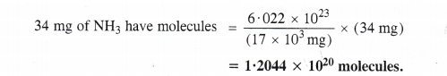
Step II. Calculation of total number and mass of protons
No. of protons present in one molecule of NH3 = 7 + 3 = 10 .
No. of protons present in 12.044 × 1020 molecules of NH3 = 12.044 × 1020 × 10
= 1.2044 × 1022 protons
Mass of one proton = 1.67 × 10-27 kg
Mass of 1.2044 × 1022 protons = (1.67 × 10-27 kg) × 1.2044 × 1022
= 2.01 × 10-5 kg.
No, the answer will not change upon changing the temperature and pressure because only the number of protons and mass of protons are involved.
Question 3.
How many protons and neutrons are present in the following nuclei
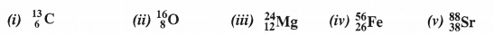
Answer:
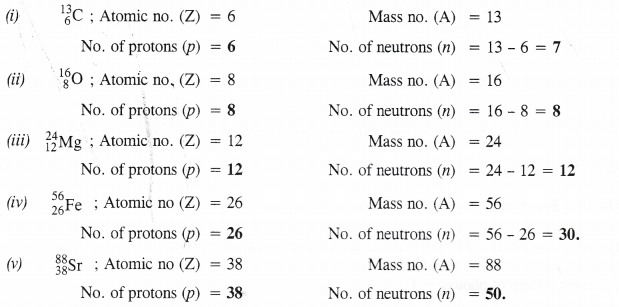
Question 4.
Write the complete symbol for the atom (X) with the given atomic number (Z) and atomic mass (A)
(i) Z = 17,A = 35
(ii) Z = 92, A = 233
(in) Z = 4, A = 9.
Answer:
Question 5.
Yellow light emitted from a sodium lamp has a wavelength (2) of 580 nm. Calculate the frequency (v) and wave number (v) of yellow light.
Answer:
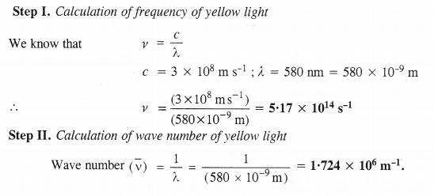
Question 6.
Calculate the energy of each of the photons which
(i) correspond to light of frequency 3 × 1015 Hz
(ii) have wavelength of 0-50 A.
Answer:
(i) Energy of photon (E) = hv
h = 6.626 × 10-34 J s ; v = 3 × 1015 Hz = 3 × 1015s-1
∴ E = (6.626 × 10-34 J s) × (3 × 1015 s-1) = 1.986 × 1018 J
Energy of photon (E) = hv = \(\frac { hc }{ \lambda } \)
h = 6.626 × 10 34 J s; c = 3 × 108 m s-1 ;
λ= 0.50 Å = 0.5 × 10-10 m.
Question 7.
Calculate the wavelength, frequency, and wavenumber of lightwave whose period is 2.0 × 10-10 s.
Answer:

Question 8.
What is the number of photons of light with wavelength 4000 pm which provide 1 Joule of energy ?
Answer:
Energy of photon (E) = \(\frac { hc }{ \lambda } \)
h = 6.626 × 10-34 Js, c = 3 × 108 m s-1, λ = 4000 pm = 4000 × 10-12 = 4 × 10-9 m
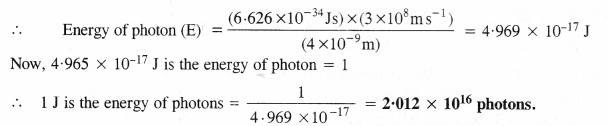
Question 9.
A photon of wavelength 4 × 10-7 m strikes on metal surface ; the work function of the metal being 2.13 eV. Calculate (i) the energy of the photon,
(ii) the kinetic energy of the emission
(iii) the velocity of the photoelectron. (Given 1 eV = 1.6020 × 10-19 J).
Answer:
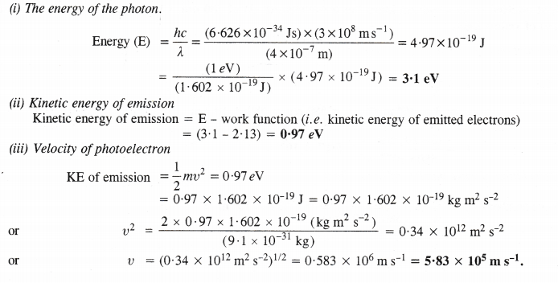
Question 10.
Electromagnetic radiation of wavelength 242 nm is just sufficient to ionise the sodium atom. Calculate the ionisation energy of sodium in k-J mol-1.
Answer:
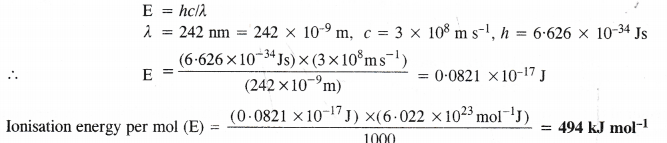
Question 11.
A 25 watt bulb emits monochromatic yellow light of wavelength 0.57 μm. Calculate the rate of emission of quanta per second.
Answer:
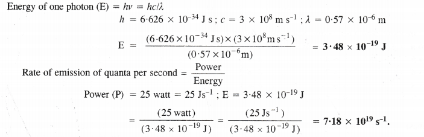
Question 12.
Electrons are emitted with zero velocity from a metal surface when it is exposed to radiation of wavelength 6800 A. Calculate threshold frequency (v0) and work function (W0) of the metal.
Answer:
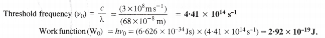
Question 13.
What is the wavelength of the light emitted when the electron in a hydrogen atom undergoes transition from the energy level with n = 4 to energy level n = 2 ? What is the colour corresponding to this wavelength ? (Given RH = 109678 cm-1)
Answer:
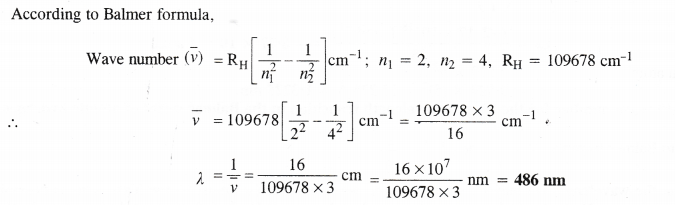
Question 14.
How much energy is required to ionise a hydrogen atom if an electron occupies n = 5 orbit ? Compare your answe r with the ionisation energy of H atom (energy required to remove the electron from n = 1 orbit)
Answer:
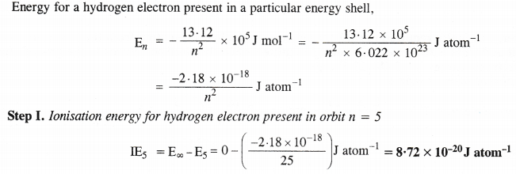

Question 15.
What is the maximum number of emission lines when the excited electron of a hydrogen atom in n = 6 drops to the ground state ?
Answer:
The maximum no. of emission lines = \(\frac { n(n – 1) }{ 2 }\) = \(\frac { 6(6 – 1) }{ 2 }\) =3 × 5 = 15

Question 16.
(i) The energy associated with first orbit in hydrogen atom is – 2.17 × 10-18 J atom-1. What is the energy associated with the fifth orbit ?
(ii) Calculate the radius of Bohr’s fifth orbit for hydrogen atom.
Answer:

(ii) For hydrogen atom ; rn = 0.529 x n2 Å
r5 = 0.529 x (5)2 = 13.225 Å = 1.3225 nm.
Question 17.
Calculate the wave number for the longest wavelength transition in the Balmer series of atomic hydrogen.
Answer:

Question 18.
What is the energy in joules required to shift the electron of the hydrogen atom from the first Bohr orbit to the fifth Bohr orbit and what is the wavelength of light emitted when the electron returns to the ground state ? The ground state electronic energy is – 2.18 × 11-11 ergs.
Answer:

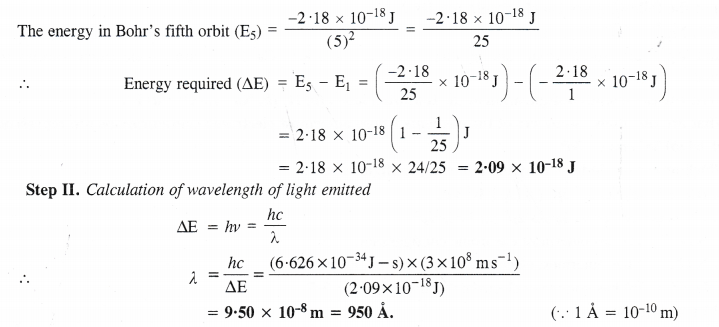
Question 19.
The electronic energy in hydrogen atom is given by En (-2.18 × 10-18 s) / n2J. Calculate the energy required to remove an electron completely from the n = 2 orbit. What is the longest wavelength of light in cm that can be used to cause this transition?
Answer:

Question 20.
Calculate the wavelength of an electron moving with a velocity of 2.05 × 107 m s-1.
Answer:
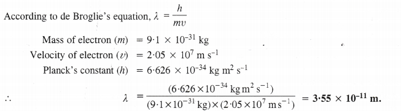
Question 21.
The mass of an electron is 9.1 × 10-31 kg. If its kinetic energy is 3.0 × 10-25 J, calculate its wavelength.
Answer:
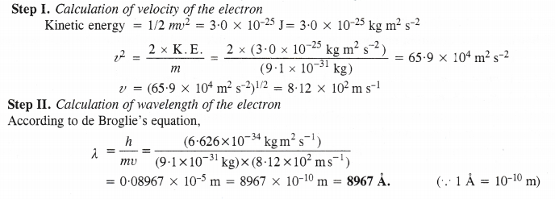
Question 22.
Which of the following are iso-electronic species ?
Na+, K+, Mg2+, Ca2+, S2-, Ar.
Answer:
Na+ and Mg2+ are iso-electronic species (have 10 electrons) K+, Ca2+ , S2- are iso-electronic species (have 18 electrons)
Question 23.
(i) Write the electronic configuration of the following ions : (a) H (b) Na+ (c) 02~ (d) F–.
(ii) What are the atomic numbers of the elements whose outermost electronic configurations are represented by :
(a) 3s1 (b) Ip3 and (c) 3d6 ?
(iii) Which atoms are indicated by the following configurations ?
(a) [He]2s1 (b) [Ne] 3s2 3p3 (c) [Ar] 4s2 3d1.
Answer:
(i) (a) 1s2
(b) 1s2 2s2 2p6
(c) 1s22s22p6
(d) 1s22s22p6.
(ii) (a) Na (Z = 11) has outermost electronic configuration = 3s1
(b) N (Z = 7) has outermost electronic configuration = 2p3
(c) Fe (Z = 26) has outermost electronic configuration = 3d6
(iii) (a) Li
(b) P
(c) Sc
Question 24.
What is the lowest value of n which allows ‘g’ orbital to exist ?
Answer:
The lowest value of l w’here ‘g’ orbital can be present = 4
The lowest value of n where ‘g’ orbital can be present = 4+1=5.
Question 25.
An electron is in one of the 3d orbitals. Give the possible values of n, l and nil for the electron.
Answer:
For electron in 3d orbital, n = 3, l = 2, mi = -2, -1, 0, +1, +2.
Question 26.
An atom of an element contains 29 electrons and 35 neutrons. Deduce (i) the number of protons and (ii) the electronic configuration of the element.
Answer:
No. of protons in a neutral atom = No. of electrons = 29
Electronic configuration = 1s2 2s2 2p6 3s2 3p6 3d10 4s1.
Question 27.
Give the number of electrons in the species : H2+, H2 and 02+.
Answer:
H2+ = one ; H2 = two ; 02+ = 15
Question 28.
(i) An atomic orbital has n = 3. What are the possible values of l and ml ?
(ii) List the quantum numbers ml and l of electron in 3rd orbital.
(iii) Which of the following orbitals are possible ?
1p, 2s, 2p and 3f.
Answer:
(i) For n = 3; l = 0, 1 and 2.
For l = 0 ; ml = 0
For l = 1; ml = +1, 0, -1
For l = 2 ; ml = +2, +1,0, +1, + 2
(ii) For an electron in 3rd orbital ; n = 3; l = 2 ; ml can have any of the values -2, -1, 0,
+ 1, +2.
(iii) 1p and 3f orbitals are not possible.
Question 29.
Using s, p and d notations, describe the orbitals with follow ing quantum numbers :
(a) n = 1, l = 0
(b) n = 4, l = 3
(c) n = 3, l = 1
(d) n = 4, l = 2
Answer:
(a) 1s orbital
(b) 4f orbital
(c) 3p orbital
(d) 4d orbital
Question 30.
From the following sets of quantum numbers, state which are possible. Explain why the others are not possible.
(i) n = 0, l = 0, ml = 0, ms = +1/2
(ii) n = 1, l = 0, ml = 0, ms – – 1/2
(iii) n = 1, l = 1, ml = 0, ms= +1/2
(iv) n = 1, l = 0, ml = +1, ms= +1/2
(v) n = 3, l = 3, ml = -3, ms = +1/2
(vi) n = 3, l = 1, ml = 0, ms= +1/2
Answer:
(i) The set of quantum numbers is not possible because the minimum value of n can be 1 and not zero.
(ii) The set of quantum numbers is possible.
(iii) The set of quantum numbers is not possible because, for n = 1, l can not be equal to 1. It can have 0 value.
(iv) The set of quantum numbers is not possible because for l = 0. mt cannot be + 1. It must be zero.
(v) The set of quantum numbers is not possible because, for n = 3, l ≠ 3.
(vi) The set of quantum numbers is possible.
Question 31.
How many electrons in an atom may have the following quantum numbers?
(a) n = 4 ; ms = -1/2
(b) n = 3, l = 0.
Answer:
(a) For n = 4
Total number of electrons = 2n2 = 2 × 16 = 32
Half out of these will have ms = —1/2
∴ Total electrons with ms (-1/2) = 16
(b) For n = 3
l= 0 ; ml = 0, ms +1/2, -1/2 (two e–)
Question 32.
Show that the circumference of the Bohr orbit for the hydrogen atom is an integral multiple of the de Broglie wavelength associated with the electron revolving around the orbit.
Answer:
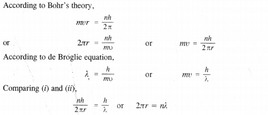
Thus, the circumference (2πr) of the Bohr orbit for hydrogen atom is an integral multiple of the de Broglie wavelength.
Question 33.
Calculate the number of atoms present in :
(i) 52 moles of He
(ii) 52 u of He
(iii) 52 g of He.
Answer:

Question 34.
Calculate the energy required for the process :
He+fe) → He2+(g) + e–
The ionisation energy’ for the H atom in the ground state is 2.18 × 10-18 J atom-1
Answer:
For H atom (Z = 1), En =2.18 × 10-18 × (l)2 J atom-1 (given)
For He+ ion (Z = 2), En =2.18 × 10-18 × (2)2 = 8.72 × 10-18 J atom-1 (one electron species)
Question .35.
If the diameter of carbon atom is 0.15 nm, calculate the number of carbon atoms which can be placed side by side in a straight line across a length of a scale of length 20 cm long.
Answer:
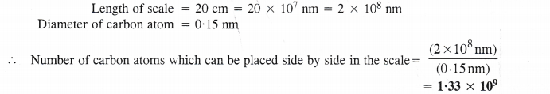
Question 36.
2 × 108 atoms of carbon are arranged side by side. Calculate the radius of carbon atom if the length of this arrangement is 2.4 cm.
Answer:
The length of the arrangement = 2.4 cm
Total number of carbon atoms present = 2 ×108
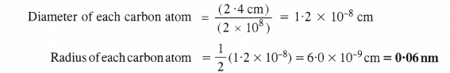
Radius of each carbon atom = \(\frac{ 1 }{ 2 }\)(1.2 × 10-8) = 6.0 × 10-9cm = 0.06 nm
Question 37.
The diameter of zinc atom is 2.6 Å. Calculate :
(a) the radius of zinc atom in pm
(b) number of atoms present in a length of 1.6 cm if the zinc atoms are arranged side by side length wise.
Answer:
(a) Radius of zinc atom =\(\frac { 2.6\AA }{ 2 } \)= 1.3 Å = 1.3 × 10-10m = 130 × 10-12m = 130 pm
(b) Length of the scale = 1.6 cm = 1.6 × 1010 pm
Diameter of zinc atom = 260 pm
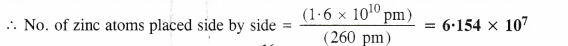
Question 38.
A certain particle carries 2.5 x 10-16 C of static electric charge. Calculate the number of electrons present in it.
Answer:
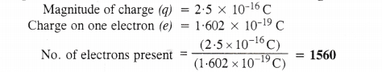
Question 39.
In Millikan’s experiment, the charge on the oil droplets was found to be – 1.282 x 10-18C. Calculate the number of electrons present in it.
Answer:
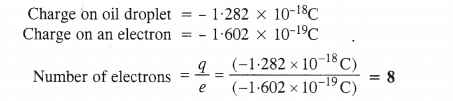
Question 40.
In Rutherford experiment, generally the thin foil of heavy atoms like gold, platinum etc. have been used to be bombarded by the a-particles. If a thin foil of light atoms like aluminium etc. is used, what difference would be observed from the above results?
Answer:
We have studied that in Rutherford’s experiment by using heavy metals like gold and platinum, a large number of a-particles sufferred deflection while a very few had to retrace their path.
If a thin foil of lighter atoms like aluminium etc. be used in the Rutherford experiment, this means that the obstruction offered to the path of the fast moving a-particles will be comparatively quite less.
As a result, the number of a-particles deflected will be quite less and the particles which are deflected back will be negligible.
Question 41.
Symbols \(_{ 35 }^{ 79 }{ Br }\) and 79Br can be written whereas symbols \(_{ 79 }^{ 35 }{ Br }\) and 35Br are not accepted. Answer in brief.
Answer:
In the symbol \(_{ A }^{ B }{ X }\) of an element :
A denotes the atomic number of the element
B denotes the mass number of the element.
The atomic number of the element can be identified from its symbol because no two elements can have the atomic number. However, the mass numbers have to be mentioned in order to identify the elements. Thus,
Symbols \(_{ 35 }^{ 79 }{ Br }\) and 79Br are accepted because atomic number of Br will remain 35 even if not mentioned. Symbol \(_{ 79 }^{ 35 }{ Br }\) is not accepted because atomic number of Br cannot be 79 (more than the mass number = 35). Similarly, symbol 35Br cannot be accepted because mass number has to be mentioned. This is needed to differentiate the isotopes of an element.
Question 42.
An element with mass number 81 contains 31.7% more neutrons as compared to protons. Assign the symbol to the element.
Answer:
An element can be identified by its atomic number only. Let us find the atomic number.
Let the number of protons = x
Number of neutrons = x + [\(\frac { x\times 31.7 }{ 100 } \) = (x × 0.317x)
Now, Mass no. of element = no. of protons =no. neutrons
81 = x + x + 0-317 x = 2.317 x or x = \(\frac { 81 }{ 2.317 } \) = 35
∴ No. of protons = 35, No. of neutrons = 81 – 35 =46
Atomic number of element (Z) = No. of protons = 35
The element with atomic number (Z) 35 is bromine \(_{ 35 }^{ 81 }{ Br }\).
Question 43.
An ion with mass number 37 possesses one unit of negative charge. If the ion contains 11 -1% more neutrons than the electrons, find the symbol of the ion.
Answer:
Let the no. of electron in the ion = x
∴ the no. of protons = x – 1 (as the ion has one unit negative charge)
and the no. of neutrons = x + \(\frac { x\times 11.1 }{ 100 } \) = 1.111 x
Mass no. or mass of the ion = No. of protons + No. of neutrons
(x – 1 + 1.111 x)
Given mass of the ion = 37
∴ x- 1 + 1.111 x = 37 or 2.111 x = 37 + 1 = 38
x = \(\frac { 38 }{ 2.111 } \) = 18
No. of electrons = 18 ; No. of protons = 18 – 1 = 17
Atomic no. of the ion = 17 ; Atom corresponding to ion = Cl
Symbol of the ion = \(_{ 17 }^{ 37 }{ Cl }\)–
Question 44.
An ion with mass number 56 contains 3 units of positive charge and 30.4% more neutrons than electrons. Assign symbol to the ion.
Answer:
Let the no. of electrons in the ion = x
∴ the no. of the protons = x + 3 (as the ion has three units positive charge)
and the no. of neutrons = x + \(\frac { x\times 31.7 }{ 100 } \) = xc + 0.304 x
Now, mass no. of ion = No. of protons + No. of neutrons
= (x + 3) + (x + 0.304x)
∴ 56 = (x + 3) + (x + 0.304x) or 2.304x = 56 – 3 = 53
x = \(\frac { 53 }{ 2.304 } \) = 23
Atomic no. of the ion (or element) = 23 + 3 = 26
The element with atomic number 26 is iron (Fe) and the corresponding ion is Fe3+.
Question 45.
Arrange the following type of radiations in increasing order of wavelength :
(a) radiation from microwave oven
(b) amber light from traffic signal
(c) radiation from FM radio
(d) cosmic rays from outer space and
(e) X-rays.
Answer:
Cosmic rays < X-rays < amber colour < microwave < FM
Question 46.
Nitrogen laser produces radiation of wavelength of 337.1 nm. If the number of photons emitted is 5.6 x 1024, calculate the power of this laser.
Answer:
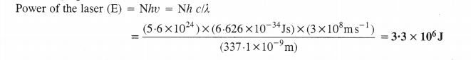
Question 47.
Neon gas is generally used in sign boards. If it emits strongly at 616 nm, calculate :
(a) frequency of emission (b) the distance travelled by this radiation in 30s (c) energy of quantum (d) number of quanta present if it produces 2 J of energy.
Answer:
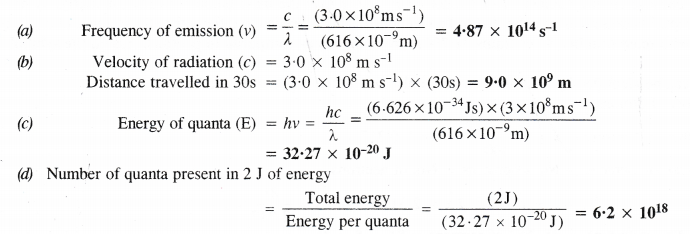
Question 48.
In astronomical observations, signals observed from the distant stars are generally weak. If the photon detector receives a total of 3.15 x 10-18 J from the radiations of 600 nm, calculate the number of photons received by the detector.
Answer:
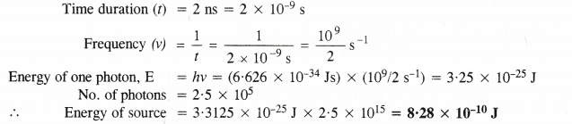
Question 49.
Life times of the molecules in the excited states are often measured by using pulsed radiation source of duration nearly in the nano second range. If the radiation source has the duration of 2 ns and the number of photons emitted during the pulse source is 2.5 x 1015, calculate the energy of the source.
Answer:
Time duration (t) = 2 ns = 2 x 10-9 s
Energy of one photon, E = hv = (6.626 x 10-34 Js) x (109/2 s-1) = 3.25 x 10-25J
No. of photons = 2.5 x 105
∴ Energy of source = 3.3125 x 10-25 J x 2.5 x 1015 = 8.28 x 10-10 J
Question 50.
The longest wavelength doublet absorption transition is observed at 589 nm and 589.6 nm. Calculate the frequency of each transition and energy difference between two excited states.
Answer:
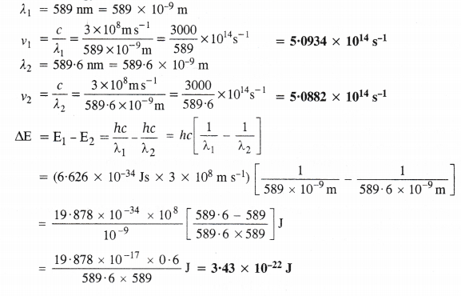
Question 51.
The work function for cesium atom is 1.9 eV. Calculate (a) the threshold wavelength and (b) the threshold frequency of the radiation. If the cesium element is irradiated with a wavelength 500 nm, calculate the kinetic energy and the velocity of the ejected photoelectron
Answer:
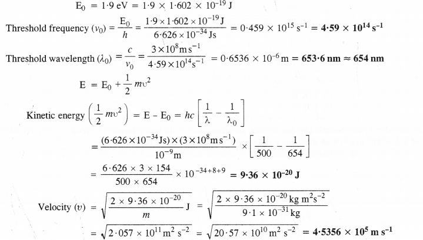
Question 52.
Following results are observed when sodium metal is irradiated with different wavelengths. Calculate threshold wavelength.
Answer:
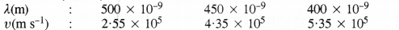

Question 53.
The ejection of the photoelectrons from the silver metal in the photoelectric effect experiment can be stopped by applying the voltage of 0.35 V when the radiation 256.7 nm is used. Calculate the work function for silver metal.
Answer:
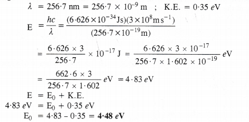
Question 54.
If the photon of the wavelength 150 pm strikes an atom, one of its inner bound electrons is ejected out with a velocity of 1.5 x 107 m s-1. Calculate the energy with which it is bound to the nucleus.
Answer:
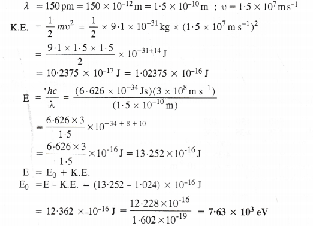
Question 55.
Emission transitions in the Paschen series end at orbit n = 3 and start from orbit n and can be represented as v = 3.29 x 1015 (Hz) [1/32 – 1 /n2]
Calculate the value of n if the transition is observed at 1285 nm. Find the region of the spectrum.
Answer:
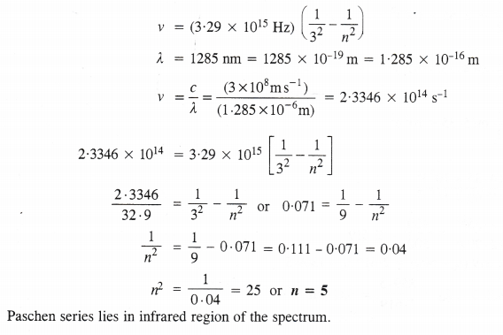
Question 56.
Calculate the wavelength for the emission transition if it starts from the orbit having radius 1.3225 nm and ends at 211.6 pm. Name the series to which this transition belongs and the region of the spectrum.
Answer:

Question 57.
Dual behaviour of matter proposed by de Broglie led to the discovery of electron microscope often used for the highly magnified images of biological molecules and other type of material. If the velocity of the electron in this microscope is 1.6 x 106 m s-1, calculate de Brogile wavelength associated with this electron.
Answer:
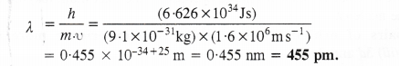
Question 58.
Similar to electron diffraction, neutron diffraction microscope is also used for the determination of the structure of molecules. If the wavelength used here is 800 pm, calculate the characteristic velocity associated with the neutron.
Answer:
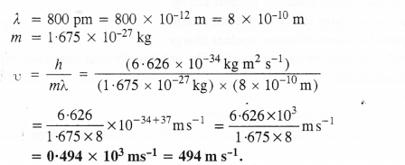
Question 59.
If the velocity of the electron in Bohr’s first orbit is 2.19 x 106 m s-1, calculate the de Brogile wavelength associated with it.
Answer:
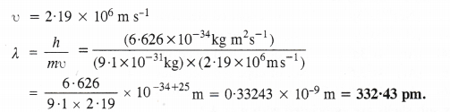
Question 60.
The velocity associated with a proton moving in a potential difference of 1000 V is 4.37 x 105 m s-1. If the hockey ball of mass 0.1 kg is moving with this velocity, calculate the wavelength associated with this velocity.
Answer:
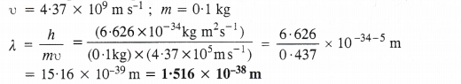
Question 61.
If the position of the electron is measured within an accuracy of ± 0.002 nm, calculate the uncertainty in the momentum of the electron. Suppose the momentum of the electron is \(\frac { h }{ 4\pi } \) x 0.05 nm. Is there any problem in defining this value ?
Answer:
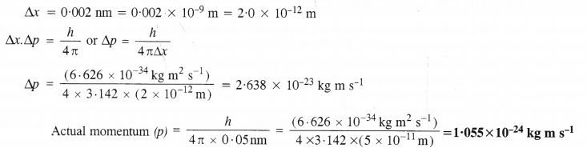
Since actual momentum is smaller than the uncertainty in measuring momentum, therefore, the momentum of electron can not be defined.
Question 62.
The quantum numbers of six electrons are given below. Arrange them in order of increasing energies. List if any of these combination(s) has/have the same energy
(i) n = 4, l = 2, ml = -2, ms = -1/2
(ii) n = 3, l = 2, ml = 1, ms = +1/2
(iii) n = 4, l = 1, ml = 0, ms = +1/2
(iv) n = 3, l = 2, ml = -2, ms = -111
(v) n = 3, l = l, ml = -1, ms = +1/2
(vi) n = 4, l = 1, ml = 0, ms = +1/2
Answer:
The electrons may be assigned to the following orbitals :
(i) 4d
(ii) 3d
(iii) 4p
(iv) 3d
(v) 3p
(vi) 4p.
The increasing order of energy is :
(v) < (ii) = (iv) < (vi), = (iii) < (i)
Question 63.
The bromine atom possesses 35 electrons. It contains 6 electrons in 2p orbital, 6 electrons in 3p orbital and 5 electrons in 4p orbital. Which of these electrons experiences lowest effective nuclear charge ?
Answer:
4p electron experiences lowest effective nuclear charge because of the maximum magnitude of screening or shielding effect. It is farthest from the nucleus.
Question 64.
Among the following pairs of orbitals, which orbital will experience more effective nuclear charge (i) 2s and 3s (ii) 4d and 4f (iii) 3d and 3p ?
Answer:
Please note that greater the penetration of the electron present in a particular orbital towards the nucleus, more will be the magnitude of the effective nuclear charge. Based upon this,
(i) 2s electron will experience more effective nuclear charge.
(ii) 4d electron will experience more effective nuclear charge.
(iii) 3p electron will experience more effective nuclear charge.
Question 65.
The unpaired electrons in A1 and Si are present in the 3p orbital. Which electrons will experience more effective nuclear charge from the nucleus?
Answer:
Configuration of the two elements are :
A1 (Z = 13) : [Ne]103s23p1 ; Si (Z = 14) : [Ne] 103s23p2
The unpaired electrons in silicon (Si) will experience more effective nuclear charge because the atomic number of the element Si is more than that of A1.
Question 66.
Indicate the number of unpaired electrons in :
(a) P (b) Si (c) Cr (d) Fe and (e) Kr.
Answer:
(a) P (z=15) : [Ne]103s23p3 ; No. of unpaired electrons = 3
(b) Si (z=14) : [Ne]103s23p2 ; No. of unpaired electrons = 2
(c) Cr (z=24): [Ar]184s13d5 ; No. of unpaired electrons = 6
(d) Fe (z=26): [Ar]184s23d6 ; No. of unpaired electrons = 4
(e) Kr (z=36) : [Ar]184s23d104p6 ; No. of unpaired electrons = Nil.
Question 67.
(a) How many sub-shells are associated with n = 4 ?
(b) How many electrons will be present in the sub-shells having ms value of -1/2 for n = 4 ?
Answer:
(a) For n = 4 ; No. of sub-shells = (l = 0, l = 1, l = 2, l = 3) = 4.
(b) Total number of orbitals which can be present = n2 = 42 = 16.
Each orbital can have an electron with ms = – 1/2 -‘. Total no. of electrons with m, = – 1/2 is 16.
MORE QUESTIONS SOLVED
I. Very Short Answer Type Questions
Question 1. Give the relation between wavelength and momentum of moving microscopic particle. What is the relation known as?
Answer:
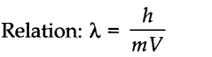
The relation is known as de Broglie’s relationship.
Question 2. Write the electronic configuration and number of unpaired electrons in Fe2+ion.
Answer: Fe (Z = 26) : [Ar]18 3d64s2
Fe2+ion : [Ar]18 3d6
No. of unpaired electrons = 4
More Resources for CBSE Class 11
- NCERT Solutions
- NCERT Solutions Class 11 Maths
- NCERT Solutions Class 11 Physics
- NCERT Solutions Class 11 Chemistry
- NCERT Solutions Class 11 Biology
- NCERT Solutions Class 11 Hindi
- NCERT Solutions Class 11 English
- NCERT Solutions Class 11 Business Studies
- NCERT Solutions Class 11 Accountancy
- NCERT Solutions Class 11 Psychology
- NCERT Solutions Class 11 Entrepreneurship
- NCERT Solutions Class 11 Indian Economic Development
- NCERT Solutions Class 11 Computer Science
Question 3. What are degenerate orbitals ?
Answer: Orbitals having same energy belonging to the same subshell.
Question 4. What is the most important application of de Broglie concept?
Answer: In the construction of electron microscope used for the measurement of objects of very small size.
Question 5. Which one Fe3+, Fe2+is more paramagnetic and why?
Answer: As Fe3+ contains 5 impaired electrons while Fe2+ contains only 4 unpaired electrons. Fe3+ is more paramagnetic.
Question 6. Which element does not have any neutron?
Answer: Hydrogen.
Question 7. What is value of Planck’s constant in S.I. units?
Answer: 6.62 x 1034 Js.
Question 8. Arrange X-rays, cosmic rays and radio waves according to frequency.
Answer: Cosmic rays > X-rays > radio waves.
Question 9. Which series of lines of the hydrogen spectrum lie in the visible region?
Answer: Balmer series.
Question 10. What is the difference between ground state and excited state?
Answer: Ground state means the lowest energy state. When the electrons absorb energy and jump to outer orbits, this state is called excited state.
Question 11. What is common between dxy and dx2-y 2 orbitals?
Answer: Both have identical shape, consisting of four lobes.
Question 12. If n is equal to 3, what are the values of quantum numbers l and m?
Answer: I = 0,1, 2
m =- 2, — 1, 0, + 1, + 2 and S = +1/2 and-1/2
for each value of m.
Question 13.
Answer: Z = 35
A = 80
Atomic no. = 35 No. of protons = 35
No. of protons No. of electrons No. of neutrons
= 80 – 35 = 45
Question 14. An electron beam after hitting a neutral crystal produces a diffraction pattern? What do you conclude?
Answer: Electron has wave nature.
Question 15. An electron beam on hitting a ZnS screen produces a scientillation on it. What do you conclude?
Answer: Electron has particle nature.
Question 16. Discuss the similarities and differences between a 1s and a 2s orbital.
Answer: Similarities:
- Both have spherical shape.
- Both have same angular momentum.
Differences:
- 1s has no node while 2s has one node.
- Energy of 2s is greater than that of 1s.
Question 17. What mil be the order of energy levels 3s, 3p and 3d in case of H-atom?
Answer: All have equal energy.
Question 18. How many unpaired electrons are present in Pd (Z = 46) ?
Answer: The electronic configuration of the element palladium (Z = 46) is [Kr]36 4d10 5S°.
This means that it has no impaired electron.
Question 19. Distinguish between a photon and quantum.
Answer: A quantum is a bundle of energy of a definite magnitude (E = hv) and it may be from any source. However, a photon is quantum of energy associated with light only.
Question 20. What type of metals are used in photoelectric cells? Give one example.
Answer: The metals with low ionisation enthalpies are used in photoelectric cells. Caesium (Cs), an alkali metal belonging to group 1 is the most commonly used metal.
Question 21. When is the energy of electron regarded as zero?
Answer: The energy of the electron is regarded as zero when it is at infinite distance from the nucleus.
At that point force of attraction between the electron and the nucleus is almost nil. Therefore, its energy is regarded as zero.
Question 22. What is difference between the notations l and L?
Answer: ‘l’ signifies the secondary quantum number.
‘L’ signifies second energy level (n = 2).
II. Short Answer Type Questions
Question 1. The uncertainty in the position of a moving bullet of mass 10 g is 10-5 m. Calculate the uncertainty in its velocity?
Answer: According to uncertainty principle,
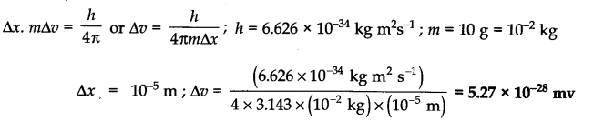
Question 2. The uncertainty in the position and velocity of a particle are 10-10m and 5.27 x 10-24 ms-1 respectively. Calculate the mass of the particle. (Haryana Board 2000)
Answer: According to uncertainty principle,
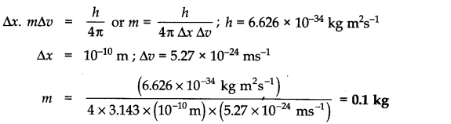
Question 3. With what velocity must an electron journey so that its momentum is equal to that of a photon of wavelength = 5200 A?
Answer:
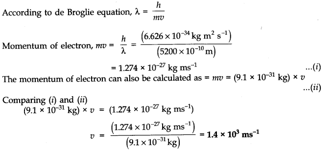
Question 4. Using Aufbau principle, write the ground state electronic configuration of following atoms.
(i)Boron (Z = 5) (ii) Neon (Z = 10), (iii) Aluminium (Z = 13) (iv) Chlorine (Z = 17), (v) Calcium (Z = 20) (vi) Rubidium (Z = 37)
Answer: (i)Boron (Z = 5) ; 1s2 2s2 1p1
(ii)Neon (Z = 10) ; 1s2 2s2 2p6
(iii)Aluminium (Z = 13) ; 1s2 2s2 2p6 3s2 3p1
(iv)Chlorine(Z = 17) ; 1s2 2s2 2p6 3s2 3p5
(v)Calcium (Z = 20) ; 1s2 2s2 2p6 3s2 3p6 4s2
(vi)Rubidium (Z = 37) ; 1s2 2s2 2p6 3s2 3p6 3d104s2 4p6 5s1.
Question 5. Calculate the de Broglie wavelength of an electron moving with 1% of the speed of light?
Answer:
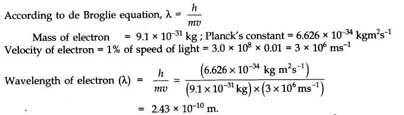
Question 6. The kinetic energy of an electron is 4.55 x 10-25 J. The mass of electron 9.1 x 10-1 kg. Calculate velocity, momentum and the wavelength of the electron?(Haryana Board, 2004, AII CBSE 2000)
Answer:
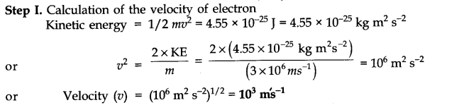
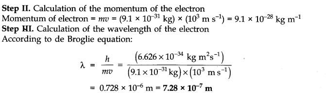
Question 7. What is the wavelength for the electron accelerated by 1.0 x 104 volts?
Answer:
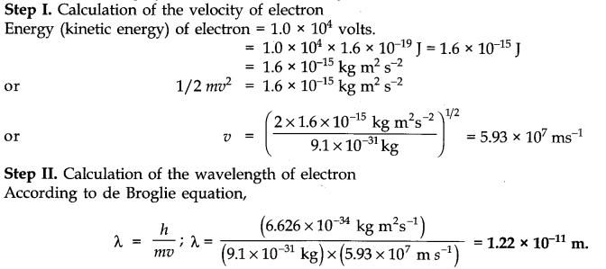
Question 8. In a hydrogen atom, the energy of an electron in first Bohr’s orbit is 13.12 x 105 J mol-1. What is the energy required for its excitation to Bohr’s second orbit?
Answer: The expression for the energy of electron of hydrogen is:
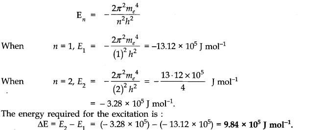
Question 9. What are the two longest wavelength lines (in manometers) in the Lyman series of hydrogen spectrum?
Answer: According to Rydberg-Balmer equation.
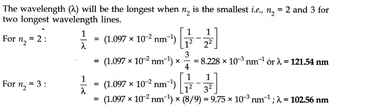
III. Long Answer Type Questions
Question 1. (a) What is the limitations of Rutherford model of atoms?
(b) How has Bohr’s theory helped in calculating the energy of hydrogen electron in different energy levels?
Answer: (a) Limitations of Rutherford Model:
(i) When a body is moving in an orbit, it achieves acceleration (even if body is moving with constant speed in an orbit, it achieves acceleration due to change in direction). So an electron moving around nucleus in an orbit is under acceleration. However, according to radiation theory of Maxwell, the charged particles when accelerated must emit energy as electromagnetic radiations. This means that the revolving electron must also lose energy continuously in the form of electromagnetic radiation. The loss of energy in revolution of the electron around the nucleus must bring it closer to the nucleus and the electron must ultimately fall into the nucleus by the spiral path. This means that the atom must collapse. But we all know that atom is quite stable in nature.
(ii) Rutherford’s model could not explain the existence of different spectral lines in the hydrogen spectrum.
(b) Based upon the postulates of Bohr’s theory, it is possible to calculate the energy of the hydrogen electron and also one electron species. (He+, Li2+ etc.) The mathematical expression for the energy in the nth orbit is
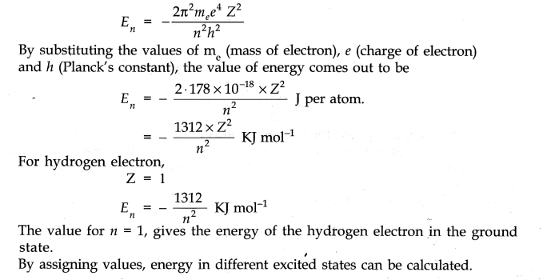
Question 2. Define atomic number, mass number and neutron. How are the three related to each other?
Answer: Atomic Number (Z): The atomic number of an element is equal to the number of protons present inside the nucleus of its atoms.
Since, an isolated atom has no net charge on it, in neutral atoms, the total number of electrons is equal to its atomic number.
Atomic number (Z) = Number of protons in the nucleus of an atom = Number of electrons in the neutral atoms
Mass Number (A): The sum of the number of neutrons and protons in the nucleus of an atom is called its mass number. Mass number is denoted by A. Thus, for an atom, Mass number (A) = Number of protons (p) + Number of neutrons (n)
A = p + n
Neutron: It is neutral particle. It is present in the nucleus of an atom. Expect hydrogen (which contains only one electron and one proton but no neutron), the atoms of all other elements including isotopes of hydrogen contain all the three fundamental particles called neutron, proton and electron.
The relation between mass number, Atomic no. and no. of neutrons is given by the equation:
Where A = Mass number
Z = Atomic number n = Number of neutrons in the nucleus.
Question 3. What were the weaknesses or limitations of Bohr’s model of atoms ? Briefly describe the quantum mechanical model of atom.
Answer: Limitations of Bohr’s model of an atom:
- It could not explain spectrum of multi-electron atoms.
- It could not explain Zeeman and Stark effects.
- It could not explain shape of molecules.
- It was not in accordance with Heisenberg’s uncertainty principle.
Quantum Mechanical Model: It was developed on the basis of Heisenberg’s uncertainty principle and dual behaviour of matter.
Main features of this model are given below :
- The energy of electrons in an atom is quantized i.e. can only have certain values.
- The existence of quantized electronic energy levels is a direct result of the wave like properties of electrons.
- Both, the exact position and velocity of an electron in an atom cannot be determined simultaneously.
- The orbitals are filled in increasing order of energy. All the information about the electron in an atom is stored in orbital wave function Ψ.
- From the value of Ψ2 at different points within atom, it is possible to predict the region around the nucleus where electron most probably will be found.
Question 4. State and explain the following:
(i) Aufbau principle
(ii) Pauli exclusion principle.
(iii) Hund’s rule of maximum multiplicity.
Answer: (i) Aufbau Principle: In the ground state of the atoms, the orbitals are filled in the order of their increasing energies. In other words, electrons first occupy the lowest-energy orbital available to them and enter into higher energy orbitals only after the lower energy orbitals are filled.
The order in which the energies of the orbitals increase and hence the order in which the orbitals are filled is as follows:
Is, 2s, 2p, 3s, 3p, 4s, 3d, 4p, 5s, 4d, 5p, 6s, 4f, 5d, 6p, 7s, 5f, 6d,7p………………..
(ii) Pauli Exclusion Principle: An orbital can have maximum of two electrons and these must have opposite signs.
For example: Two electrons in an orbital can be represented by
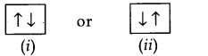
The two electrons have opposite spin, if one is revolving clockwise, the other is revolving anticlockwise or vice versa.
(iii) Hund’s Rule of Maximum Multiplicity: Electron pairing in p, d and/orbitals cannot occur until each orbital of a given subshell contains one electron each or is single occupied.
For example: For the element nitrogen which contains 7 electrons, the following configuration can be written.
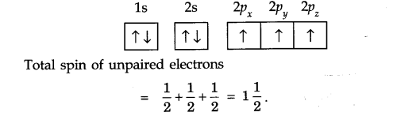
IV. Multiple Choice Questions
Question 1. Cathode rays are deflected by
(a) electric field only (b) electric and magnetic field
(c) magnetic field only (d) none of these
Question 2. In a sodium atom (atomic number = 11 and mass number = 23) and the number of neutrons is
(a) equal to the number of protons
(b) less than the number of protons
(c) greater than the number of protons
(d) none of these
Question 3. The Balmer series in the spectrum of hydrogen atom falls in
(a) ultraviolet region (b) visible region
(c) infrared region (d) none of these
Question 4. The idea of stationary orbits was first given by
(a) Rutherford (b) J.J. Thomson (c) Niels Bohr (d) Max Planck
Question 5. de Broglie equation is
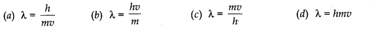
Question 6. The orbital with n = 3 and l = 2 is ,
(a) 3s (b) 3p (c) 3d (d) 3j
Question 7. The outermost electronic configuration of manganese (at. no. = 25) is
(a) 3d5 4s2 (b) 3d6 4s1 (c) 3d74s° (d) 3d6 4s2
Question 8. The energy needed to remove a single electron (most loosely bound) from an isolated – gaseous atom is called
(a) ionisation energy (b) electronegativity
(c) kinetic energy (d) electron affinity
Question 9. The maximum number of electrons in a sub-shell is given by the equation
(a) n2 (b) 2n2 (c) 2l – 1 (d) 2l + 1
Question 10. If the value of azimuthal quantum number is 2, what will be the values for magnetic quantum number?
(a) 2 (b) 3 (c) 4 (d) 5
Answer: 1. (b) 2. (c) 3. (b) 4. (c) 5. (a)
6. (c) 7. (a) 8. (a) 9. (d) 10. (d)
V. HOTS Questions
Question 1. Giue flic name and atomic number of the inert gas atom in which the total number of d-electrons is equal to the difference between the numbers of total p and total s-electrons.
Answer: Electronic configuration of Kr (atomic no. = 36) =1s2 2s2 2p6 3s2 3p6 3d10 4s2 4p6 Total no. of s-electrons = 8 Total no. of p-electrons = 18 Difference = 10, no. of d-electrons = 10
Question 2. What is the minimum product of uncertainty in the position and momentum of an electron?
Answer: h/4π
Question 3. Which orbital is non-directional?
Answer: s-orbital.
Question 4. What is the difference between notations l and L?
Answer: I represents the subshell and L represents shell.
Question 5. How many electrons in an atom can have n + l = 6?
Answer: 18.
Question 6. An anion A3+has 18 electrons. Write the atomic number of A.
Answer: 15.
Question 7. Arrange the electron (e), protons (p) and alpha particle (α) in the increasing order for the values of e/m (charge/mass).
Answer: α < p < e.
NCERT Solutions for Class 11 Chemistry All Chapters
- Chapter 1 Some Basic Concepts of Chemistry
- Chapter 2 Structure of The Atom
- Chapter 3 Classification of Elements and Periodicity in Properties
- Chapter 4 Chemical Bonding and Molecular Structure
- Chapter 5 States of Matter
- Chapter 6 Thermodynamics
- Chapter 7 Equilibrium
- Chapter 8 Redox Reactions
- Chapter 9 Hydrogen
- Chapter 10 The sBlock Elements
- Chapter 11 The pBlock Elements
- Chapter 12 Organic Chemistry: Some Basic Principles and Techniques
- Chapter 13 Hydrocarbons
- Chapter 14 Environmental Chemistry
We hope the NCERT Solutions for Class 11 Chemistry Chapter 2 Structure of Atom help you. If you have any query regarding NCERT Solutions for Class 11 Chemistry Chapter 2 Structure of Atom, drop a comment below and we will get back to you at the earliest.